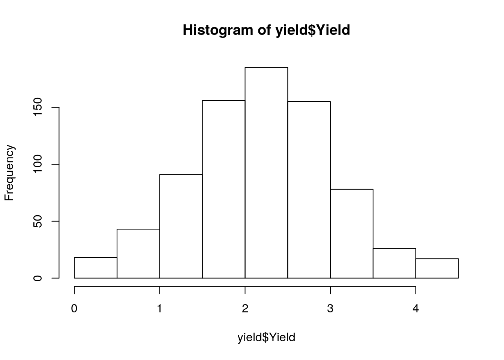
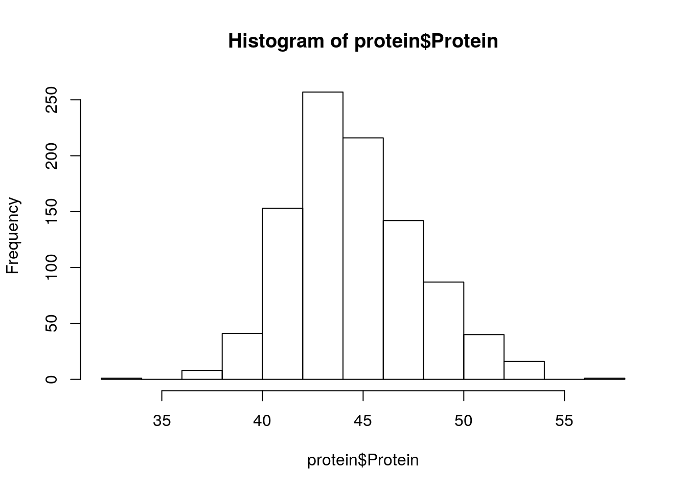
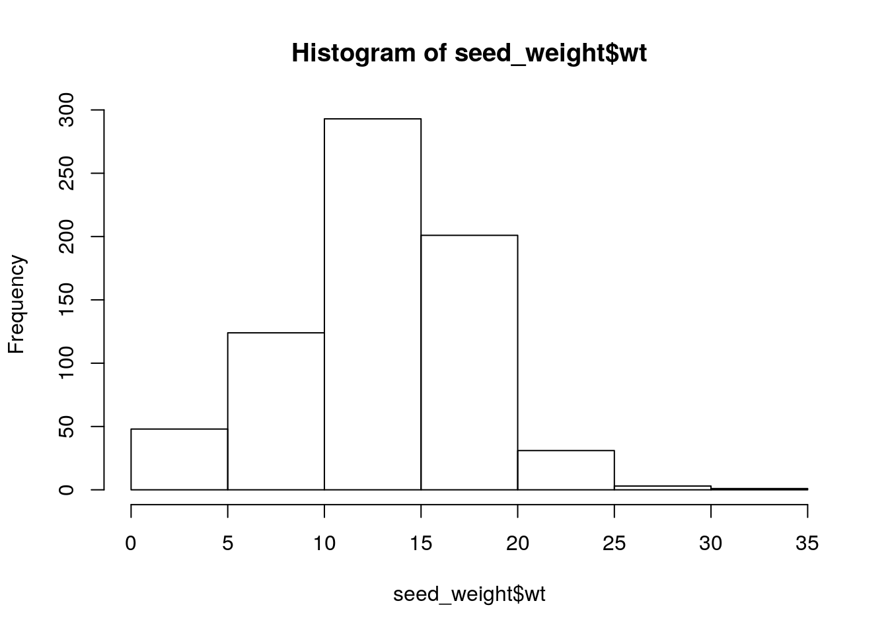
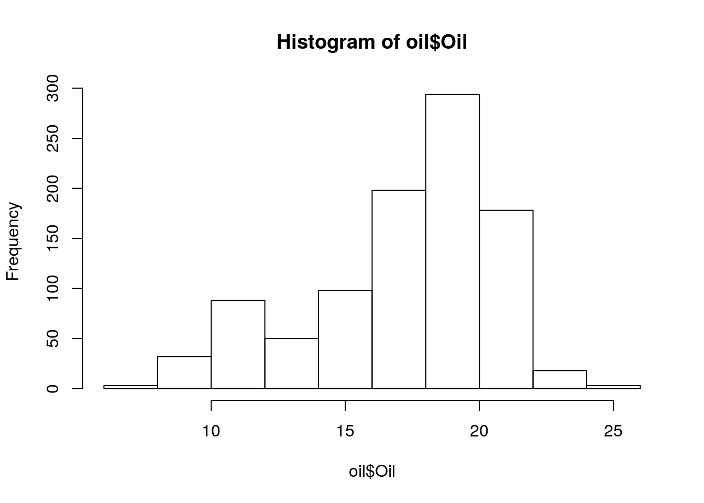

Last updated: 2021-03-18
Checks: 7 0
Knit directory: soybean_exploration/
This reproducible R Markdown analysis was created with workflowr (version 1.6.2). The Checks tab describes the reproducibility checks that were applied when the results were created. The Past versions tab lists the development history.
Great! Since the R Markdown file has been committed to the Git repository, you know the exact version of the code that produced these results.
Great job! The global environment was empty. Objects defined in the global environment can affect the analysis in your R Markdown file in unknown ways. For reproduciblity it’s best to always run the code in an empty environment.
The command set.seed(20210309) was run prior to running the code in the R Markdown file. Setting a seed ensures that any results that rely on randomness, e.g. subsampling or permutations, are reproducible.
Great job! Recording the operating system, R version, and package versions is critical for reproducibility.
Nice! There were no cached chunks for this analysis, so you can be confident that you successfully produced the results during this run.
Great job! Using relative paths to the files within your workflowr project makes it easier to run your code on other machines.
Great! You are using Git for version control. Tracking code development and connecting the code version to the results is critical for reproducibility.
The results in this page were generated with repository version e7acd31. See the Past versions tab to see a history of the changes made to the R Markdown and HTML files.
Note that you need to be careful to ensure that all relevant files for the analysis have been committed to Git prior to generating the results (you can use wflow_publish or wflow_git_commit). workflowr only checks the R Markdown file, but you know if there are other scripts or data files that it depends on. Below is the status of the Git repository when the results were generated:
Ignored files:
Ignored: .Rhistory
Ignored: .Rproj.user/
Unstaged changes:
Modified: analysis/index.Rmd
Note that any generated files, e.g. HTML, png, CSS, etc., are not included in this status report because it is ok for generated content to have uncommitted changes.
These are the previous versions of the repository in which changes were made to the R Markdown (analysis/initial_data_organisation.Rmd) and HTML (docs/initial_data_organisation.html) files. If you’ve configured a remote Git repository (see ?wflow_git_remote), click on the hyperlinks in the table below to view the files as they were in that past version.
| File | Version | Author | Date | Message |
|---|---|---|---|---|
| html | e7acd31 | Lyron Winderbaum | 2021-03-18 | Build site. |
| html | b5081db | Lyron Winderbaum | 2021-03-11 | Build site. |
| Rmd | bf94e07 | Lyron Winderbaum | 2021-03-11 | Initial exploration of Modern USA Lines |
| html | bf0d5b6 | Lyron Winderbaum | 2021-03-11 | Build site. |
| Rmd | 3a57751 | Lyron Winderbaum | 2021-03-11 | Initial exploration of Modern USA Lines |
| html | 0a91ab9 | Lyron Winderbaum | 2021-03-11 | Build site. |
| Rmd | 190e79d | Lyron Winderbaum | 2021-03-11 | Data tidying |
| html | 10f3745 | Lyron Winderbaum | 2021-03-11 | Build site. |
| Rmd | 491156a | Lyron Winderbaum | 2021-03-11 | Tables and Intro to Data |
# # Cleanup and Global Settings
# rm(list = ls())
# if (!is.null(sessionInfo()$otherPkgs)) {
# invisible(lapply(paste0('package:', names(sessionInfo()$otherPkgs)),
# detach, character.only=TRUE, unload=TRUE))
# }
# graphics.off()
# options(stringsAsFactors = FALSE)
knitr::opts_chunk$set(message = FALSE)
library(tidyverse)── Attaching packages ─────────────────────────────────────────────────────────────────────────────────── tidyverse 1.2.1 ──✔ ggplot2 3.2.1 ✔ purrr 0.3.2
✔ tibble 2.1.3 ✔ dplyr 0.8.3
✔ tidyr 1.0.0 ✔ stringr 1.4.0
✔ readr 1.3.1 ✔ forcats 0.4.0── Conflicts ────────────────────────────────────────────────────────────────────────────────────── tidyverse_conflicts() ──
✖ dplyr::filter() masks stats::filter()
✖ dplyr::lag() masks stats::lag()# library(patchwork)
# library(sjPlot)
library(ggsci)
# library(dabestr)
# library(dabestr)
# library(cowplot)
# library(ggsignif)
# library(ggforce)
# library(lme4)
# library(directlabels)
# library(lmerTest)
# library(sjPlot)
# library(dotwhisker)
# library(pals)
# theme_set(theme_cowplot())
# library(RColorBrewer)
library(countrycode)npg_col = pal_npg("nrc")(9)
col_list <- c(`Wild`=npg_col[8],
Landrace = npg_col[3],
`Old cultivar`=npg_col[2],
`Modern cultivar`=npg_col[4])Rows are genes with gene names in first column `Individual’, individual cultivars are in columns (confusingly).
pav_table <- read_tsv('./data/soybean_pan_pav.matrix_gene.txt.gz')
dim(pav_table)[1] 51414 1111head(names(pav_table))[1] "Individual" "AB-01" "AB-02" "BR-01" "BR-02"
[6] "BR-03" Lets reorganise the data to be a little more managable
gene_nms = pav_table$Individual
line_nms = names(pav_table)[-1]
pav_table = t(pav_table[, -1])
names(pav_table) = gene_nms
pav_table = as.tibble(pav_table)Warning: `as.tibble()` is deprecated, use `as_tibble()` (but mind the new semantics).
This warning is displayed once per session.names(pav_table) = gene_nms
pav_table = cbind(line_nms, pav_table)
names(pav_table)[1] = 'Line'
pav_table[1:4, 1:4] Line GlymaLee.01G000100.1.p GlymaLee.01G000200.1.p
1 AB-01 1 1
2 AB-02 1 1
3 BR-01 1 1
4 BR-02 1 1
GlymaLee.01G000300.1.p
1 1
2 1
3 1
4 1dim(pav_table)[1] 1110 51415nbs <- read_tsv('./data/Lee.NBS.candidates.lst', col_names = c('Name', 'Class'))
# have to remove the .t1s
nbs$Name <- gsub('.t1','', nbs$Name)
nbs# A tibble: 486 x 2
Name Class
<chr> <chr>
1 UWASoyPan00953 CN
2 GlymaLee.13G222900.1.p CN
3 GlymaLee.18G227000.1.p CN
4 GlymaLee.18G080600.1.p CN
5 GlymaLee.20G036200.1.p CN
6 UWASoyPan01876 CN
7 UWASoyPan04211 CN
8 GlymaLee.19G105400.1.p CN
9 GlymaLee.18G085100.1.p CN
10 GlymaLee.11G142600.1.p CN
# … with 476 more rowstable(nbs$Class)
CN CNL NBS NL OTHER TN TNL TX
13 123 52 95 20 22 99 62 # NBS Presence Absence Data
# nbs_pav_table <- pav_table %>% filter(Individual %in% nbs$Name)groups <- read_csv('./data/Table_of_cultivar_groups.csv')
groups <- rename(groups, Group = `Group in violin table`)
groups <- groups %>%
mutate(Group = str_replace_all(Group, 'landrace', 'Landrace')) %>%
mutate(Group = str_replace_all(Group, 'Old_cultivar', 'Old cultivar')) %>%
mutate(Group = str_replace_all(Group, 'Modern_cultivar', 'Modern cultivar')) %>%
mutate(Group = str_replace_all(Group, 'Wild-type', 'Wild'))
groups$Group <-
factor(
groups$Group,
levels = c('Wild',
'Landrace',
'Old cultivar',
'Modern cultivar')
)
names(groups)[names(groups) == 'Data-storage-ID'] = 'Line'
groups# A tibble: 1,069 x 3
Line `PI-ID` Group
<chr> <chr> <fct>
1 SRR1533284 PI416890 Landrace
2 SRR1533282 PI323576 Landrace
3 SRR1533292 PI157421 Landrace
4 SRR1533216 PI594615 Landrace
5 SRR1533239 PI603336 Landrace
6 USB-108 PI165675 Landrace
7 HNEX-13 PI253665D Landrace
8 USB-382 PI603549 Landrace
9 SRR1533236 PI587552 Landrace
10 SRR1533332 PI567293 Landrace
# … with 1,059 more rowstable(groups$Group)
Wild Landrace Old cultivar Modern cultivar
157 723 46 143 yield <- read_tsv('./data/yield.txt')
yield# A tibble: 769 x 2
Line Yield
<chr> <dbl>
1 USB-756 0.08
2 USB-014 0.09
3 USB-035 0.14
4 USB-499 0.15
5 USB-755 0.16
6 USB-047 0.17
7 USB-742 0.25
8 USB-227 0.26
9 USB-230 0.27
10 USB043 0.290
# … with 759 more rowshist(yield$Yield)
| Version | Author | Date |
|---|---|---|
| 10f3745 | Lyron Winderbaum | 2021-03-11 |
summary(yield$Yield) Min. 1st Qu. Median Mean 3rd Qu. Max.
0.080 1.630 2.180 2.188 2.740 4.480 protein <- read_tsv('./data/protein_phenotype.txt')
protein# A tibble: 962 x 2
Line Protein
<chr> <dbl>
1 SRR1533182 56.8
2 USB-129 53.9
3 PI562534 53.9
4 PI407228 53.6
5 SRR1533175 53.6
6 HNY-10 53.6
7 USB-388 53.4
8 PI378684B 53.2
9 USB-014 53.1
10 PI424025B 53
# … with 952 more rowshist(protein$Protein)
| Version | Author | Date |
|---|---|---|
| 10f3745 | Lyron Winderbaum | 2021-03-11 |
summary(protein$Protein) Min. 1st Qu. Median Mean 3rd Qu. Max.
32.50 42.33 44.20 44.57 46.48 56.80 seed_weight <- read_tsv('./data/Seed_weight_Phenotype.txt', col_names = c('names', 'wt'))
names(seed_weight)[names(seed_weight) == 'names'] = 'Line'
seed_weight# A tibble: 701 x 2
Line wt
<chr> <dbl>
1 BR-30 12.5
2 For 11.7
3 HN001 13.1
4 HN002 7.8
5 HN003 9.6
6 HN005 8.1
7 HN006 8.7
8 HN007 8.1
9 HN008 11.7
10 HN009 15
# … with 691 more rowshist(seed_weight$wt)
| Version | Author | Date |
|---|---|---|
| 10f3745 | Lyron Winderbaum | 2021-03-11 |
summary(seed_weight$wt) Min. 1st Qu. Median Mean 3rd Qu. Max.
1.00 10.10 13.20 12.89 15.90 32.80 oil <- read_tsv('./data/oil_phenotype.txt')
oil# A tibble: 962 x 2
Line Oil
<chr> <dbl>
1 SRR1533369 25.4
2 SRR1533328 25.1
3 HN080 24.7
4 HN001 23.6
5 HNEX-08 23.6
6 USB-222 23.5
7 USB022 23.5
8 USB-039 23.5
9 HNEX-23 23
10 SRR1533444 22.9
# … with 952 more rowshist(oil$Oil)
| Version | Author | Date |
|---|---|---|
| 10f3745 | Lyron Winderbaum | 2021-03-11 |
summary(oil$Oil) Min. 1st Qu. Median Mean 3rd Qu. Max.
7.5 15.6 18.1 17.3 19.8 25.4 country <- read_csv('./data/Cultivar_vs_country.csv')
names(country)[names(country) == 'Data-storage-ID'] = 'Line'
names(country)[names(country) == 'Origin country'] = 'Country'
country$Continent <- countrycode(sourcevar = country[["Country"]],
origin = "country.name",
destination = "continent")Warning in countrycode(sourcevar = country[["Country"]], origin = "country.name", : Some values were not matched unambiguously: Costa, NDcountry# A tibble: 1,110 x 4
Line `PI-ID` Country Continent
<chr> <chr> <chr> <chr>
1 AB-01 PI458020 Korea Asia
2 AB-02 PI603713 China Asia
3 BR-01 PI628809 Brazil Americas
4 BR-02 BRS 232 Brazil Americas
5 BR-03 PI675651 Brazil Americas
6 BR-04 BRS 360RR Brazil Americas
7 BR-05 PI675666 Brazil Americas
8 BR-06 PI675660 Brazil Americas
9 BR-07 BRS Valiosa RR Brazil Americas
10 BR-08 BRSGO 8660 Brazil Americas
# … with 1,100 more rowstable(country$Country)
Algeria Argentina Australia Austria Belgium
4 2 2 1 2
Brazil Bulgaria Canada China Costa
32 1 10 483 1
Former Serbia France Georgia Germany Hungary
2 4 2 5 4
India Indonesia Italy Japan Korea
9 6 1 116 138
Kyrgyzstan Moldova Morocco Myanmar ND
1 8 1 2 14
Nepal Netherlands Pakistan Peru Philippines
3 1 1 1 2
Poland Romania Russia Serbia South Africa
1 7 63 4 1
Sweden Taiwan Tanzania Thailand Ukraine
3 7 1 1 2
USA Uzbekistan Vietnam
149 1 11 sum(is.na(country$Continent))[1] 15table(country$Continent)
Africa Americas Asia Europe Oceania
7 194 783 109 2 meta.df = merge(groups[, c('Line', 'Group')], country[, c('Line', 'Country', 'Continent')], all = TRUE)
meta.df = merge(meta.df, yield, all = TRUE)
meta.df = merge(meta.df, protein, all = TRUE)
meta.df = merge(meta.df, seed_weight, all = TRUE)
meta.df = merge(meta.df, oil, all = TRUE)
table(meta.df$Country, meta.df$Group)
Wild Landrace Old cultivar Modern cultivar
Algeria 0 3 0 0
Argentina 0 0 0 2
Australia 0 2 0 0
Austria 0 1 0 0
Belgium 0 2 0 0
Brazil 0 3 0 5
Bulgaria 0 1 0 0
Canada 0 0 1 7
China 42 416 20 1
Costa 0 1 0 0
Former Serbia 0 0 0 1
France 0 4 0 0
Georgia 0 2 0 0
Germany 0 2 2 0
Hungary 0 4 0 0
India 0 8 0 0
Indonesia 0 6 0 0
Italy 0 0 1 0
Japan 40 71 1 0
Korea 52 76 6 3
Kyrgyzstan 0 1 0 0
Moldova 0 8 0 0
Morocco 0 1 0 0
Myanmar 0 2 0 0
ND 0 11 1 0
Nepal 0 2 0 0
Netherlands 0 1 0 0
Pakistan 0 1 0 0
Peru 0 1 0 0
Philippines 0 1 0 0
Poland 0 1 0 0
Romania 0 6 0 0
Russia 21 38 4 0
Serbia 0 2 0 1
South Africa 0 0 0 1
Sweden 0 2 1 0
Taiwan 1 4 1 0
Tanzania 0 1 0 0
Thailand 0 1 0 0
Ukraine 0 2 0 0
USA 1 11 4 116
Uzbekistan 0 1 0 0
Vietnam 0 10 0 1save(pav_table, nbs, meta.df, file = file.path('data', 'pav_data.RData'))
sessionInfo()R version 3.6.3 (2020-02-29)
Platform: x86_64-pc-linux-gnu (64-bit)
Running under: Ubuntu 18.04.5 LTS
Matrix products: default
BLAS: /usr/lib/x86_64-linux-gnu/openblas/libblas.so.3
LAPACK: /usr/lib/x86_64-linux-gnu/libopenblasp-r0.2.20.so
locale:
[1] LC_CTYPE=en_AU.UTF-8 LC_NUMERIC=C
[3] LC_TIME=en_AU.UTF-8 LC_COLLATE=en_AU.UTF-8
[5] LC_MONETARY=en_AU.UTF-8 LC_MESSAGES=en_AU.UTF-8
[7] LC_PAPER=en_AU.UTF-8 LC_NAME=C
[9] LC_ADDRESS=C LC_TELEPHONE=C
[11] LC_MEASUREMENT=en_AU.UTF-8 LC_IDENTIFICATION=C
attached base packages:
[1] stats graphics grDevices utils datasets methods base
other attached packages:
[1] countrycode_1.2.0 ggsci_2.9 forcats_0.4.0
[4] stringr_1.4.0 dplyr_0.8.3 purrr_0.3.2
[7] readr_1.3.1 tidyr_1.0.0 tibble_2.1.3
[10] ggplot2_3.2.1 tidyverse_1.2.1
loaded via a namespace (and not attached):
[1] tidyselect_1.1.0 xfun_0.10 haven_2.3.1 lattice_0.20-41
[5] colorspace_1.4-1 vctrs_0.3.1 generics_0.0.2 htmltools_0.4.0
[9] yaml_2.2.0 utf8_1.1.4 rlang_0.4.6 later_1.0.0
[13] pillar_1.4.2 withr_2.1.2 glue_1.3.1 modelr_0.1.5
[17] readxl_1.3.1 lifecycle_0.1.0 munsell_0.5.0 gtable_0.3.0
[21] workflowr_1.6.2 cellranger_1.1.0 rvest_0.3.4 evaluate_0.14
[25] knitr_1.25 httpuv_1.5.2 fansi_0.4.0 broom_0.5.2
[29] Rcpp_1.0.3 promises_1.1.0 backports_1.1.5 scales_1.0.0
[33] jsonlite_1.6 fs_1.3.1 hms_0.5.1 digest_0.6.23
[37] stringi_1.4.3 grid_3.6.3 rprojroot_1.3-2 cli_1.1.0
[41] tools_3.6.3 magrittr_1.5 lazyeval_0.2.2 crayon_1.3.4
[45] whisker_0.4 pkgconfig_2.0.3 xml2_1.2.2 lubridate_1.7.4
[49] assertthat_0.2.1 rmarkdown_1.16 httr_1.4.1 rstudioapi_0.10
[53] R6_2.4.0 nlme_3.1-149 git2r_0.26.1 compiler_3.6.3